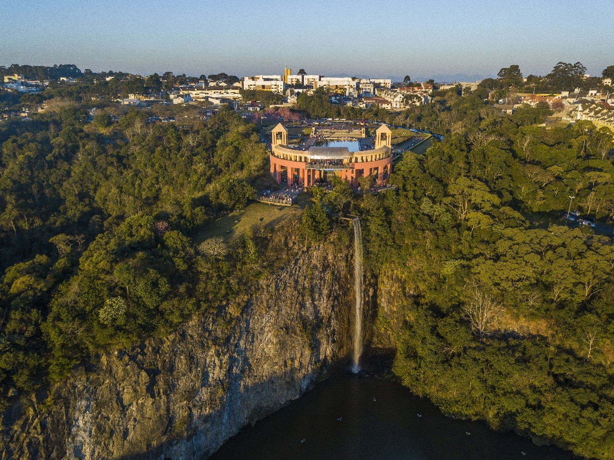
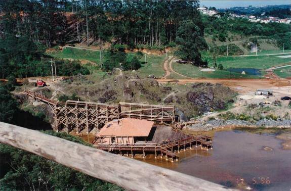

SOBRE
Garante a preservação da bacia norte do Rio Barigui, bem próximo à sua nascente, no município de Almirante Tamandaré. Possui dois lagos e um túnel artificial. É dotado ainda de ancoradouro, ciclovia, pista de corrida, lanchonete e dois estacionamentos para carros (na área inferior e superior). Na área superior localiza-se o Jardim Poty Lazzarotto, inaugurado em 6 de junho de 1998 pelo então prefeito Cassio Taniguchi. O nome é uma homenagem ao artista local Poty Lazzarotto. Anexo, existe um mirante a 65m do lago da área inferior.[3] A fauna é composta de patos, morcegos, gambás, tatus, marrecas, além de outros pássaros, cobra-d’água, e outros animais, já a flora do parque é composta de branquilhos, veludos, maria-mole, tarumã, aroeira, congonha, bromélias, araucárias, canela, pessegueiro-bravo, carvalhos, cafezeiro-bravo, erva-mate, entre outras espécies.[1] O Parque Tanguá está aberto todos os dias das 6:00 a.m. às 8:00 p.m.

HISTORIA
Antes de ser um dos cartões-postais da cidade, o Parque Tanguá abrigava pedreiras que funcionaram por muitos anos. Quando o espaço foi adquirido pela prefeitura, transformou-se em um projeto de recuperação ambiental exemplar. O parque foi inaugurado em 1996 como parte do programa de preservação dos rios da cidade. Durante a visita, é possível notar diversos elementos preservados do período da pedreira, como o túnel que atravessa um paredão rochoso e parte da estrutura original das formações de basalto. Essa fusão entre natureza e memória industrial cria um cenário único O Parque Tanguá é um dos principais parques da cidade de Curitiba, capital do estado brasileiro do Paraná. Com 235 000 m2, localiza-se na região norte da cidade, nos bairros Pilarzinho e Taboão. Foi inaugurado em 23 de novembro de 1996 pelo então prefeito Rafael Greca de Macedo, e construído onde existiam duas pedreiras, desativadas nos anos 70. e surpreendente.

CULTURA
O Tanguá, nome indígena que significa “baía das conchas”, é um dos parques preferidos de quem visita Curitiba. Um cartão postal da cidade cheio de atrativos naturais. Valem todos os momentos Localizado em uma região de pedreiras desativadas e com topografia acidentada, característica da região norte da cidade, o parque recuperou e valorizou diferentes elementos da natureza num local antes degradado. Aquele espaço foi parte de pedreira da família Gava, desativada nos anos 70, e que depois passou duas décadas sem uso. Uma cascata com 65 metros de altura jorra da parte superior do paredão de rocha, onde está o Jardim Poty Lazzarotto (1924 -1998), em estilo francês, homenagem ao artista plástico curitibano, com canteiros de flores, espelhos d’água e chafarizes. Daquele espaço projeta-se o belvedere, em semicírculo, com três pisos onde encontram-se distribuídos decks metálicos, bistrô, loja e um mirante, em duas torres de observação, a 65 m de altura. Deste ponto é possível ter uma ampla e bonita visão da capital, que fica mais iluminada pelas cores do pôr do sol. Aliás, à noite o mirante do belvedere também tem iluminação especial: é a chamada iluminação cênica, uma das marcas de Curitiba. Projetores luminotécnicos dão cores e valorizam a lâmina e a queda de água, a arquitetura das torres e das escadarias.

CURIOSIDADES
Origem do nome
Tanguá" vem do tupi-guarani e significa "cobras d'água
Queda d'água artificial
A imponente cascata de 65 metros de altura não é natural; a água é bombeada do lago inferior até o mirante para criar o espetáculo visual.
Ciclovia Integrada
O parque conta com pistas para ciclistas interligadas à rede de ciclovias da cidade, permitindo o deslocamento de bike até o Parque Tingui e o Parque Barigui.